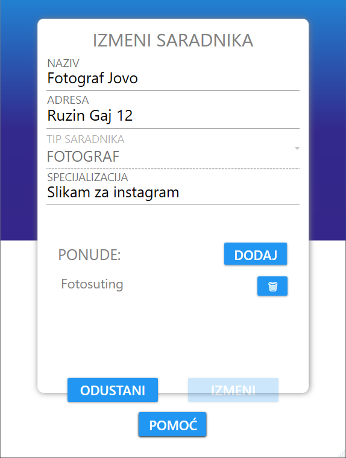
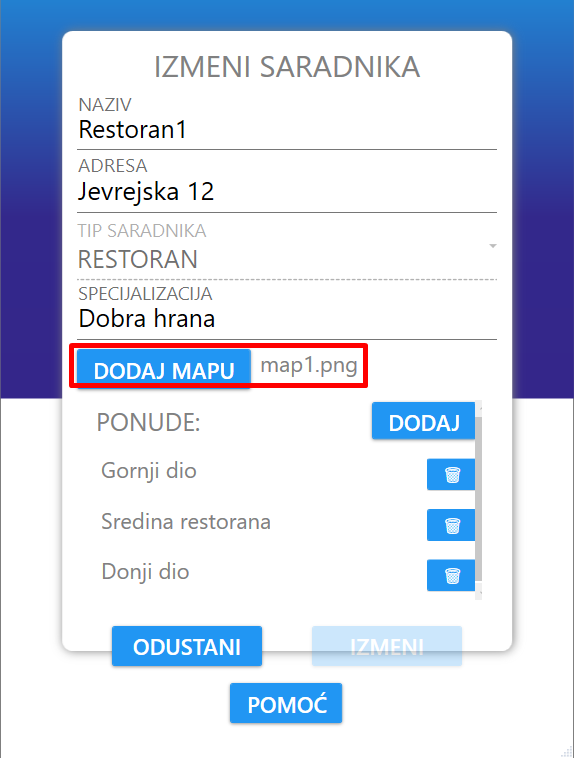
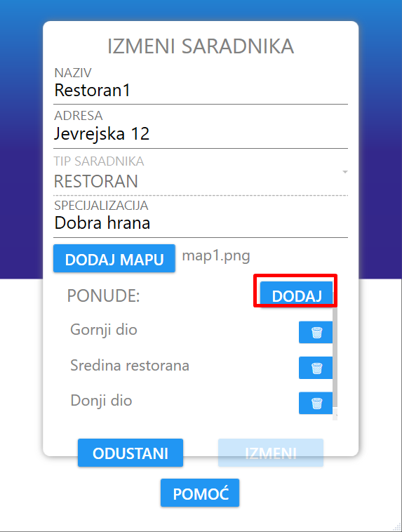
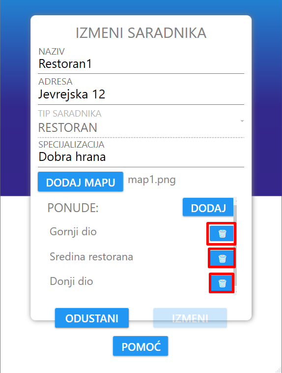
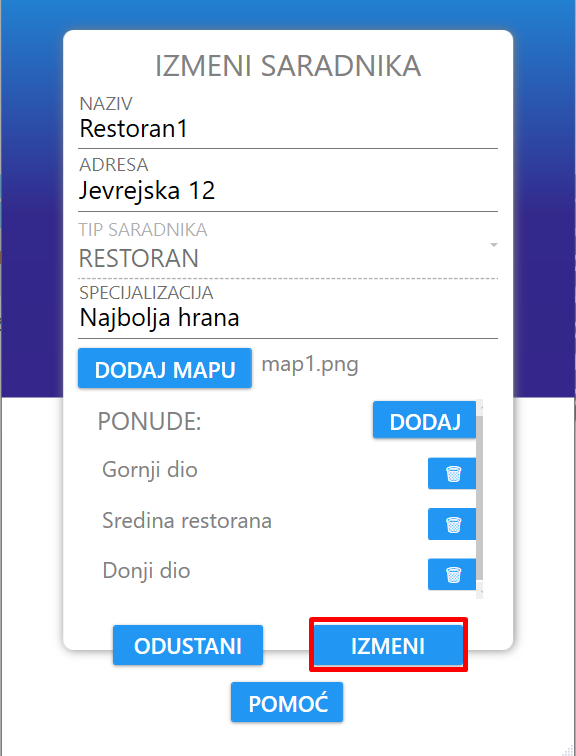
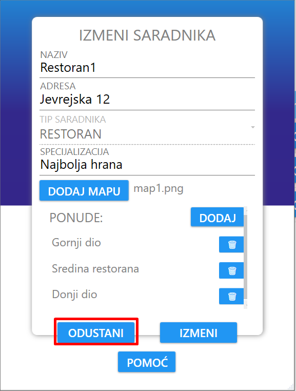

Izmena saradnika je implementirana kao forma.
Svaka forma redom sadrži naziv, adresu, tip, specijalizaciju i spisak ponuda.
Ukoliko je tip saradnika restoran, onda forma sadrži i polje za dodavanje mape.
Korisnik može da izmeni sve informacije manifestacije izuzev njenog tipa.
Korisnik može da dodaje ponude klikom na dugme "DODAJ" koje se nalazi pored labele "PONUDE".
Korisnik može da obriše ponude klikom na dugme koje se nalazi pored svake ponude.
Nakon što je korisnik izmenio neku stavku organizatora, može da sačuva te izmene klikom na dugme "IZMENI".
Ukoliko je korisnik odustao od izmene saradnika, klikom na dugme "ODUSTANI" obustavlja se proces izmene i zatvara se prozor.
